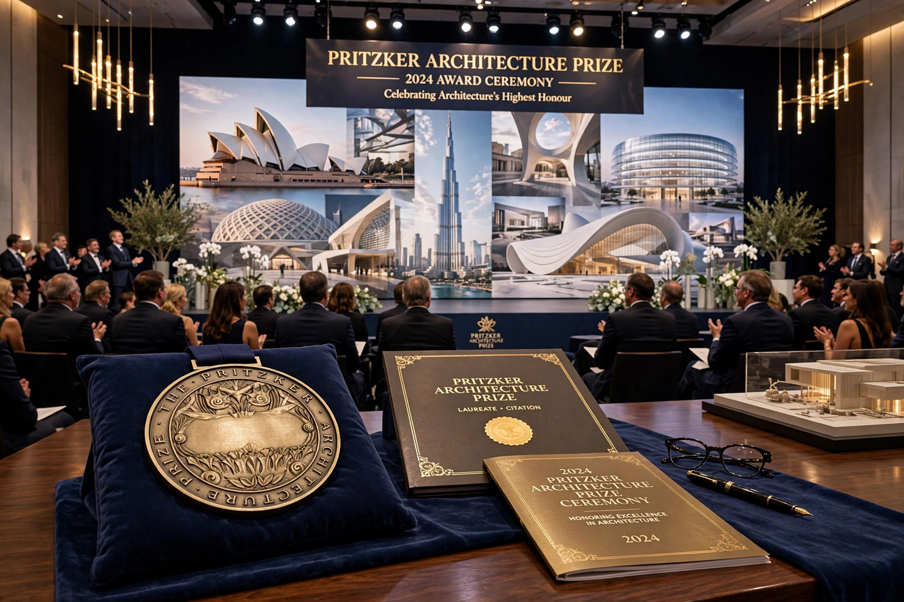

The Pritzker Architecture Prize is an international award presented annually "to honor a living architect or architects whose built work demonstrates a combination of those qualities of talent, vision and commitment, which has produced consistent and significant contributions to humanity and the built environment through the art of architecture." Founded in 1979 by Jay Pritzker and his wife Cindy, the award is funded by the Pritzker family and sponsored by the Hyatt Foundation. It is often referred to as "architecture's Nobel Prize" and is considered the profession's highest honor.

The Pritzker Prize medallion, awarded to each laureate together with a cash grant.
| Pritzker Architecture Prize | |
| Awarded for | Significant contributions to architecture |
|---|---|
| Sponsored by | Hyatt Foundation |
| First awarded | 1979 |
| Reward | US$100,000 and a bronze medallion |
| First laureate | Philip Johnson |
The Pritzker family, owners of the Hyatt hotel chain, established the prize in 1979 through the Hyatt Foundation. The first laureate was the American architect Philip Johnson, honored for fifty years of work. The prize was created in part because architecture lacked an award comparable in prestige to the Nobel Prizes.
The laureate receives US$100,000, a formal citation certificate, and since 1987 a bronze medallion inspired by the work of Louis Sullivan. Before 1987, each laureate received a limited-edition Henry Moore sculpture. The award ceremony is held each year at a significant architectural site around the world.
Nominations may be submitted by any licensed architect, academic, critic, or other person with expertise in the field. An international jury of five to nine members, appointed by the Hyatt Foundation, deliberates in private and selects the laureate. Martha Thorne served as executive director of the prize for many years.
Laureates have included I. M. Pei (1983), Richard Meier (1984), Kenzo Tange (1987), Oscar Niemeyer (1988), Frank Gehry (1989), Zaha Hadid (2004) — the first woman to win — Norman Foster (1999), Rem Koolhaas (2000), and Toyo Ito (2013). In 2024 the prize went to Riken Yamamoto.
The prize has been criticized for overlooking women and collaborative practices. In 2013 a petition called for Denise Scott Brown to be recognized jointly with her husband and partner Robert Venturi, who had won alone in 1991; the jury declined to revisit the award. In 2020 Yvonne Farrell and Shelley McNamara of Grafton Architects became the first pair of women to share the prize.